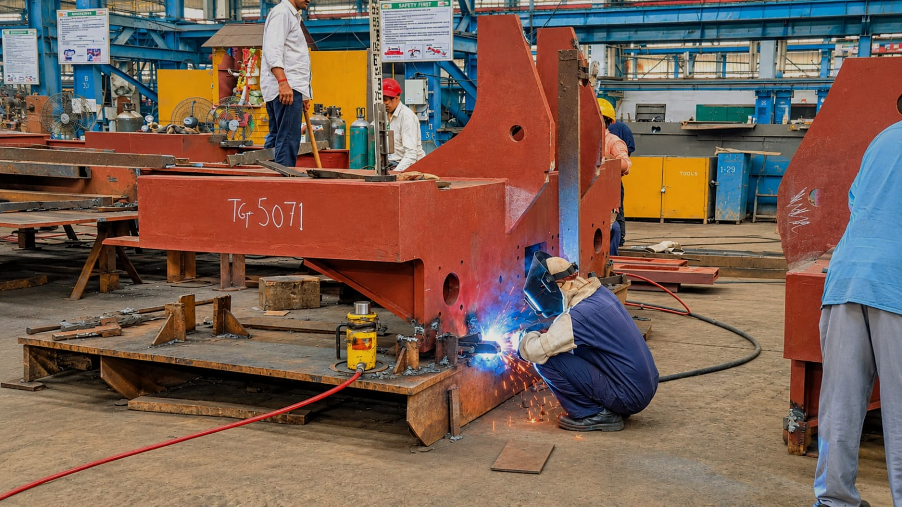
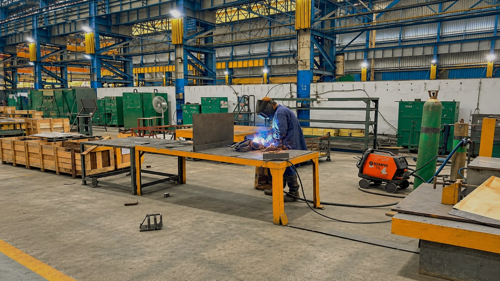

Photo Story
Steel, hands and tracks — a visual record of CLW’s industrial present.
Visual journalism
Inside the works
Field photographs from the shop floor at Chittaranjan Locomotive Works. Captions describe what is visible — they do not interpret policy outcomes or privatisation claims.




Credit & consent: Photographs from field documentation for this project. Identifiable faces appear in a workplace context; further caption updates (photographer name, exact date) can be added as ethics clearance confirms.